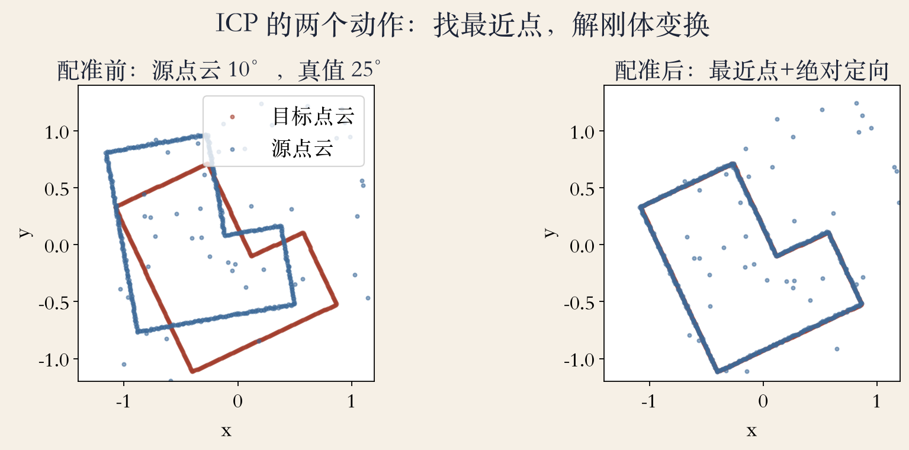
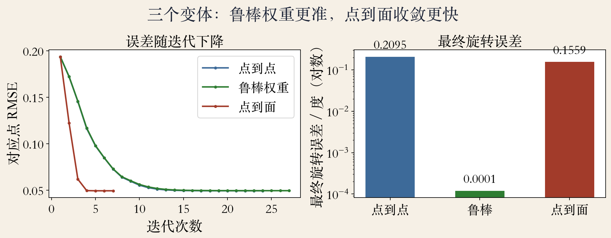
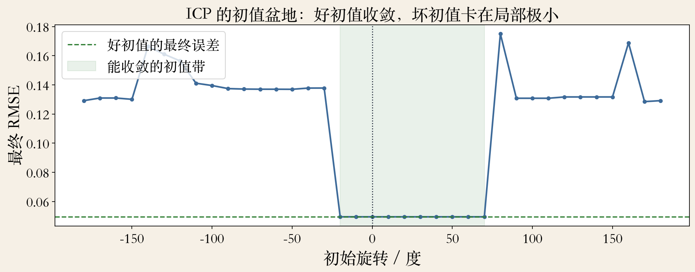

第 13 章 · 配准开场
两片点云错开了，怎么对齐
点云配准：把两片错开的点云对齐。
对齐就是找旋转 R 和平移 t。
变换之后，源点云要离目标最近。
ICP 先猜对应，再解变换，循环。
依据：原书第 821 页
本集三件事
找对应：最近点
解变换：R 和 t
循环到 RMSE 稳定
正课第一百一十四集
01 / 12
ICP 骨架
ICP 两个动作：找点、解变换
先找两片表面的最近点匹配。
再解一个三维绝对定向问题。
对应变了，变换要重算。
变换变了，最近点又会变。
依据：原书第 821 页
循环的两步
最近点：谁和谁配
绝对定向：怎么转、怎么平移
两步互相依赖，所以要循环
正课第一百一十四集
02 / 12
绝对定向 · SVD
给定对应，R 和 t 有闭式解
误差：x' 减 R x 减 t 的平方和。
先对齐质心，t = c' − R c。
减去质心，就只剩旋转。
Procrustes：C = U Σ Vᵀ，R = U Vᵀ。
依据：原书第 513 页
t = c' − R c，R = U Vᵀ
C = U Σ Vᵀ：对相关矩阵做 SVD；式 8.31 是平方和
正课第一百一十四集
03 / 12
一轮迭代 · 实验设置
一轮迭代：找点、解变换、更新
按当前变换找每个源点的最近点。
用临时对应解 R 和 t，更新源点云。
实验：498 内点，加 10% 离群点。
共 547 点；初始 10°，真值 25°。
依据：本集实验
实验设置
目标旋转 25°、平移 (0.25, −0.15)
源点噪声 0.004，阈值 0.35
最多 50 次迭代
正课第一百一十四集
04 / 12
实验一 · 点到点
看图：从错开到贴合
左图配准前：源 10°，目标 25°。
右图配准后，两片基本贴合。
RMSE 从 0.1938 降到 0.0495。
旋转误差 0.209°，平移 0.0053。
依据：本集实验

配准前差 15°，配准后贴合｜程序生成，未用教材或论文原图
正课第一百一十四集
05 / 12
实验二 · 三个变体
三个变体：更准、更快
点到点：24 次迭代，最终 0.209°。
鲁棒权重：最终 0.0001°。
点到面：7 次迭代，最终 0.156°。
右图对数轴，跨好几个数量级。
依据：本集实验

三个变体：点到点、鲁棒、点到面的最终误差｜程序生成，未用教材或论文原图
正课第一百一十四集
06 / 12
点到面 · 切平面
点到面：切平面比点更稳
Chen 和 Medioni 用局部切平面。
只要求源点到切平面的距离小。
沿表面滑动，不易被点稀疏误导。
法向估错，点到面也会被带偏。
依据：原书第 821 页
代价与前提
平面多的场景收敛快
真实扫描要先估法向
邻域点做主成分分析
正课第一百一十四集
07 / 12
鲁棒匹配 · 阈值与权重
鲁棒：阈值粗筛，权重细降
两片表面常常只有部分重叠。
距离阈值先扔掉太远的点。
本实验 63.3% 离群点仍在阈值内。
鲁棒权重把 0.209° 降到 0.0001°。
依据：原书第 821 页；本集实验
Huber 权重
残差小：按平方算
残差大：改成线性
避免一个离群点拉偏整个解
正课第一百一十四集
08 / 12
实验三 · 初值盆地
看图：好初值才收敛对
横轴初始旋转，纵轴最终 RMSE。
−20° 到 70° 都收敛到 0.0495。
180° 初值最后是 0.1310。
收敛带只对这个 L 形负责。
依据：本集实验

初值盆地：初始旋转 vs 最终 RMSE，180° 落入局部极小｜程序生成，未用教材或论文原图
正课第一百一十四集
09 / 12
全局初值 · 描述子
全局初值：先粗后细
ICP 和变体只能找到局部最优。
自旋图像：表面圆投影成二维签名。
描述子找粗对应，ICP 再细对齐。
更早的例子：splash 表示。
依据：原书第 821 页
先粗后细
描述子把搜索缩到正确盆地
ICP 再细对齐
顺序反了会越陷越深
正课第一百一十四集
10 / 12
加速与扩展
工程变体：SDF、颜色、非刚性
点集转符号距离函数，用八叉树存。
颜色参与配准；非刚性也有变体。
本实验 KD-tree 与暴力搜索 100 点一致。
先选对距离和初值，再谈加速。
依据：原书第 821 页；本集实验
两类查询
SDF：适合稠密体素
KD-tree：适合稀疏点云
颜色项：把亮度差加进误差
正课第一百一十四集
11 / 12
收束 · 下一集
最近点给对应，SVD 给变换
ICP：最近点猜对应，绝对定向解 R/t。
点到面、鲁棒权重、阈值都在这套流程上。
初值不对，循环也救不回来。
三维用 3×3 SVD 或 Horn 四元数。
依据：第 13 章；本集实验
收束
最近点给对应
SVD 给变换
循环给收敛
正课第一百一十四集
12 / 12